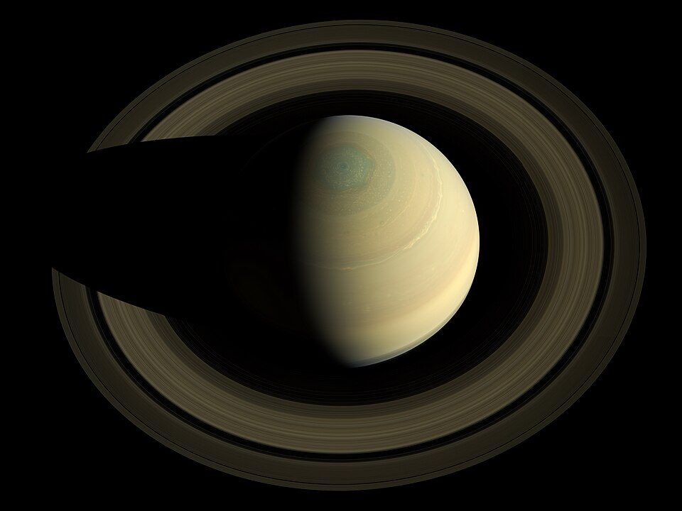
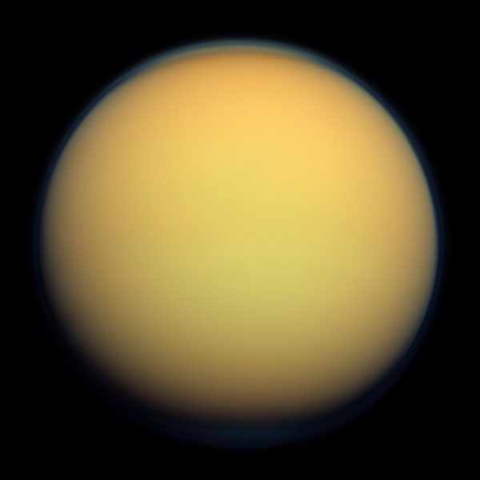

Saturno
El señor de los anillos: un gigante tan ligero que flotaría en el agua, rodeado de hielo y con más lunas que ningún otro planeta.


Saturno es el sexto planeta desde el Sol y el segundo más grande, pero lo que lo hace inolvidable son sus anillos. Es el planeta más lejano que se ve a simple vista, y los antiguos lo asociaron con el dios del tiempo por su lento avance por el cielo: tarda casi 30 años en dar una vuelta al Sol.
Un gigante que flotaría
Saturno está hecho sobre todo de hidrógeno y helio, como Júpiter. Tiene 95 veces la masa de la Tierra, pero ocupa tanto volumen que su densidad media es menor que la del agua: si existiera una bañera lo bastante grande, Saturno flotaría. Gira tan rápido, en unas 10 horas y media, que es el planeta más achatado: está visiblemente aplastado por los polos.
Los anillos
Los anillos se extienden hasta unos 280.000 km del planeta, casi tres cuartas partes de la distancia entre la Tierra y la Luna, pero su grosor es en general de solo unos 10 metros. Están formados por billones de fragmentos de hielo de agua casi puro, desde granos de polvo hasta bloques como casas.
Su edad es motivo de debate. Los datos de la sonda Cassini sugieren que podrían ser jóvenes, de unos cientos de millones de años, quizá los restos de una luna destrozada por la gravedad del planeta. También se están perdiendo: el hielo cae poco a poco sobre Saturno como una «lluvia de anillos».


Un hexágono en el polo
En el polo norte de Saturno hay una corriente en chorro con forma de hexágono casi perfecto, de unos 29.000 km de lado, más grande que dos Tierras. Lo descubrieron las Voyager en los años ochenta y sigue allí. Se cree que se forma por las diferencias de velocidad entre bandas de viento.
Más lunas que nadie
Saturno es el planeta con más lunas conocidas: 274 confirmadas en 2025. Dos de ellas son de las más interesantes del sistema solar:
- Titán, mayor que Mercurio, es la única luna con una atmósfera densa y el único lugar, aparte de la Tierra, con lagos y ríos en su superficie, aunque de metano y etano líquidos.
- Encélado, de solo 500 km, lanza al espacio chorros de agua desde un océano oculto bajo el hielo.


La misión Cassini–Huygens
La sonda Cassini, de la NASA, la ESA y la agencia italiana, orbitó Saturno de 2004 a 2017. Dejó caer el módulo europeo Huygens sobre Titán, el aterrizaje más lejano de la historia, y descubrió los géiseres de Encélado. Al quedarse sin combustible se lanzó contra la atmósfera de Saturno para no contaminar sus lunas.
Vídeos para entenderlo mejor
- Cassini: ÚLTIMAS imágenes de la nave en SATURNOAstrum Español · 1,3 M visualizaciones
Los vídeos son de YouTube y de sus autores. Se cargan solo al pulsar sobre ellos. Ver todos los vídeos →